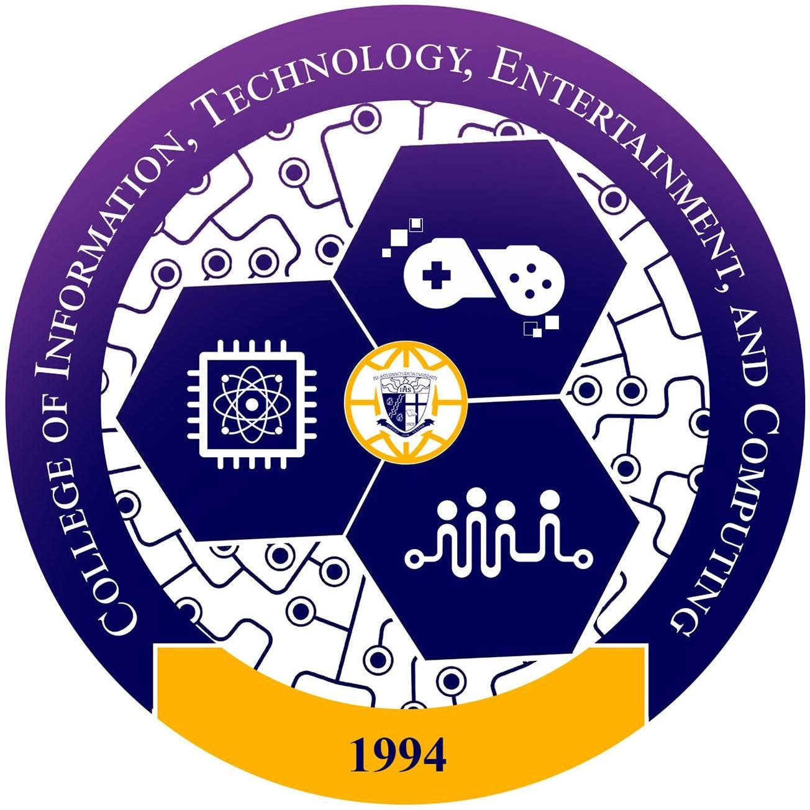
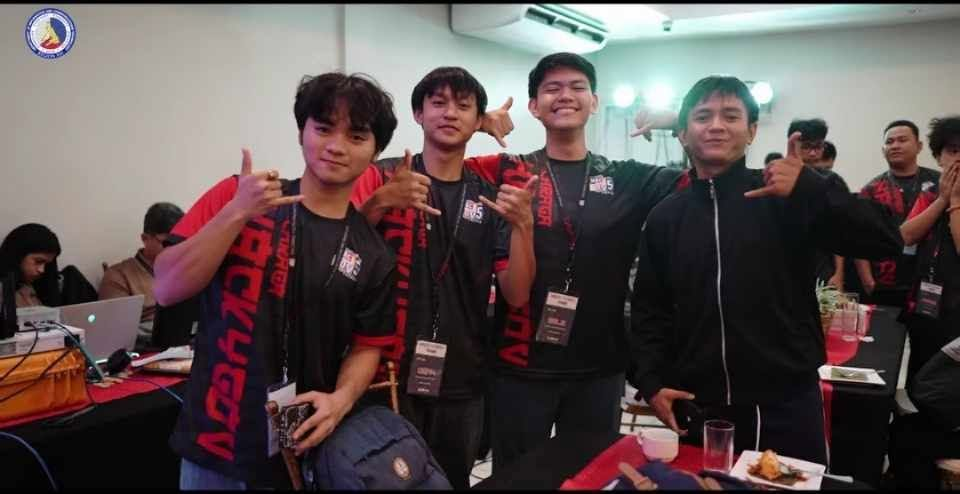
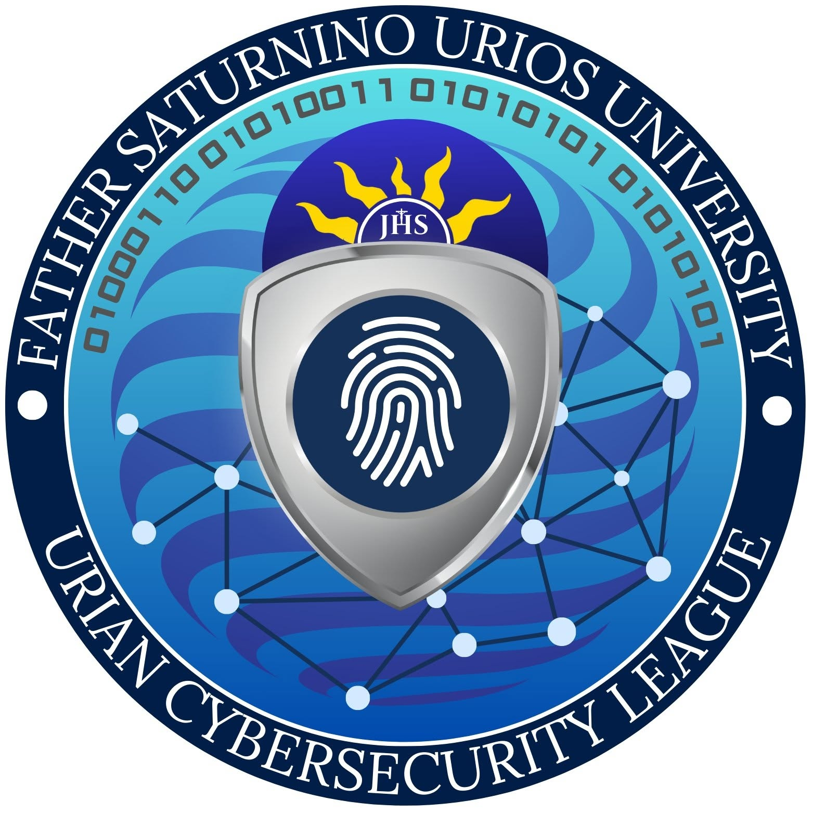

| TERMINAL_SESSION: user_profile.sh | FSUU OPERATOR NODE | |||
root@fsuu-system:~#
./init_profile.sh --user="Dean Mark Luna"
|

// 02. Academic Institution
| INSTITUTION | DETAILS & ACADEMIC FOCUS |
|
Father Saturnino Urios University
(FSUU) Higher Education Node |
Currently pursuing studies at Father Saturnino Urios University (FSUU), focusing on computing, software fundamentals, and information security concepts.
Key Academic & Technical Pillars:
|
// 03. Technical Capabilities
|
|
|
| AFFILIATED_ORGANIZATIONS & CAMPUS_ACTIVITIES | ||
|
 FSUU Student Organization [ Active Member / Participant ] Participating in university technology events, academic workshops, and student body initiatives at Father Saturnino Urios University. |
 Cybersecurity & CTF Challenges [ Technical Contributor / Float ] Engaging in CTF practice routines, preparing cheat sheets, and supporting web security and forensics challenge efforts. |
 Cybersecurity Team Community [ Peer Strategist / Collaborator ] Collaborating with fellow student developers on Reverse Engineering, Network Security, and open-source learning materials. |
// 05. Security Projects & Practical Work
|
|
// 06. Establish Connection
|
[ OPERATOR DIRECTORY ]
Dean Mark Luna Student @ Father Saturnino Urios University (FSUU) Open for academic collaboration, cybersecurity projects, CTF team events, and IT study groups. LOCATION: Encyrpted INSTITUTION: Father Saturnino Urios University STATUS: Active / Learning |
[ TRANSMIT MESSAGE ]
|
|
Built by Dean Mark Luna | Father Saturnino Urios University (FSUU) System Status: Operational | PNG Background Applied |